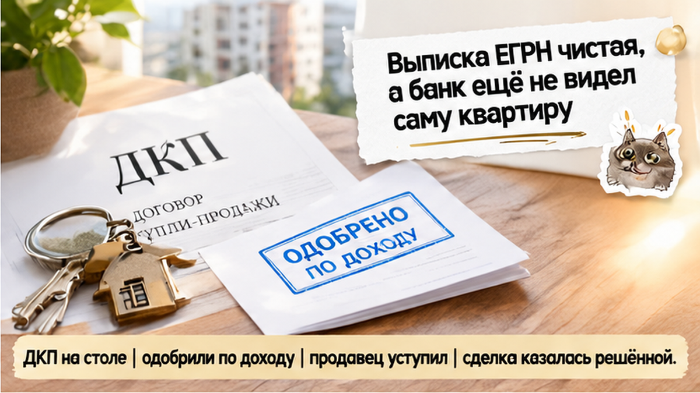
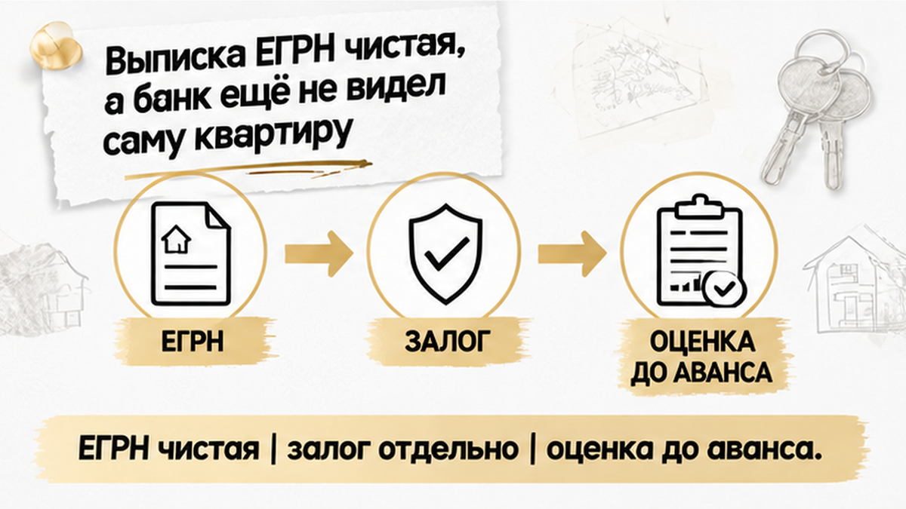
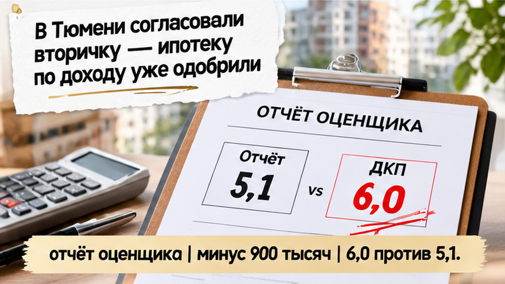
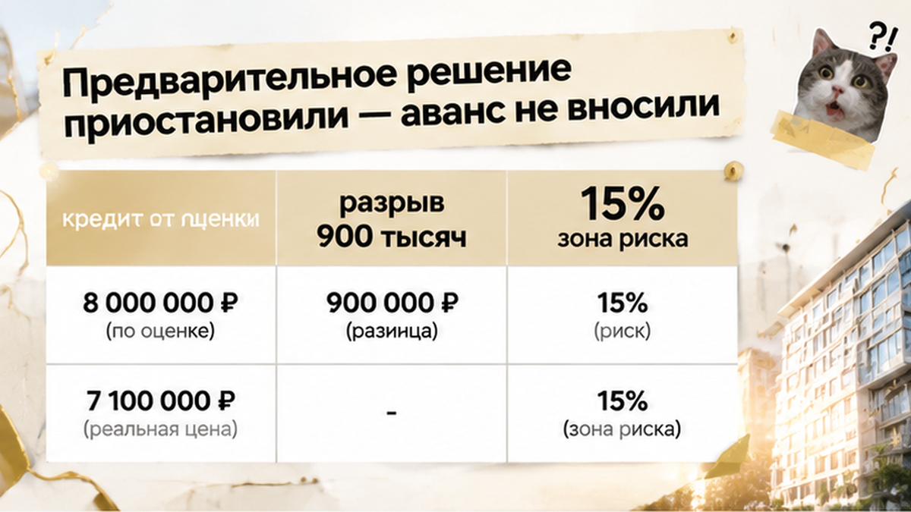
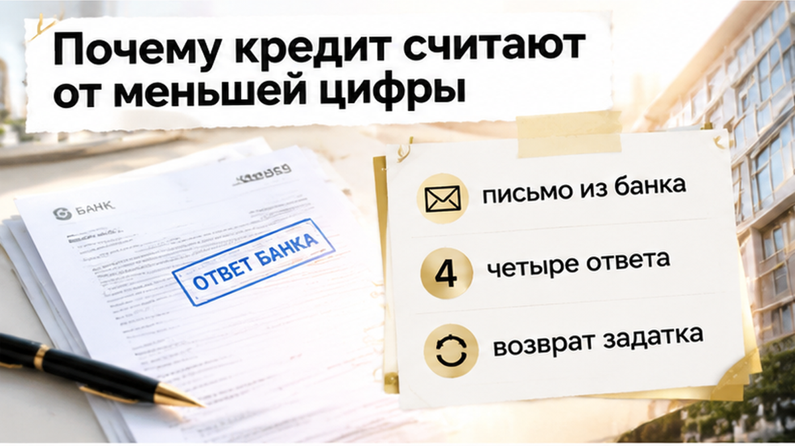
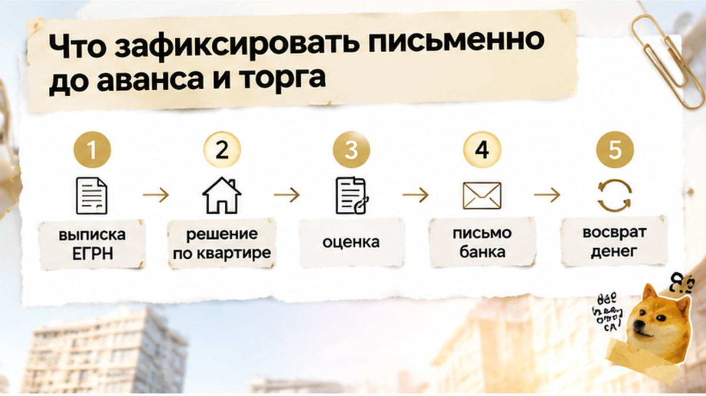

В Тюмени банк оценил квартиру на вторичке на 900 000 ₽ дешевле цены в проекте ДКП и приостановил уже полученное предварительное одобрение ипотеки. До этого у семьи всё сходилось: продавец уступил в цене после двух просмотров, выписка чистая, ежемесячный платёж укладывался в бюджет. Потом позвонил оценщик, и расчёт перестал сходиться. Деньги семья не потеряла по одной причине: обязательную банковскую оценку заказали до аванса, а не после. Продавец ничего не скрывал, документы были в порядке. Просто банк считает кредит от своей цифры, а не от той, о которой люди договорились на просмотре.
Разбираем такие сделки до того, как деньги ушли продавцу. Проверки вторички, оценка, ипотека и разборы реальных ситуаций есть в наших каналах: Telegram и MAX.

Вечером на кухне всё выглядело решённым. На столе лежал распечатанный проект ДКП, рядом телефон с уведомлением из банка: предварительное одобрение получено. Сумма кредита подходила, продавец уступил, обе стороны пожали руки. Покупатели уже прикидывали дату сделки и обсуждали, когда заказывать грузчиков.
Но одобрение было по доходу. Банк проверил самих заёмщиков: зарплату, кредитную историю, текущую нагрузку. Саму квартиру он к этому моменту ещё не видел. Это два разных решения, и второе пока никто не принимал, хотя за тем столом об этом не думал никто.

Документы покупатели проверили честно, без спешки. Свежая выписка ЕГРН: собственник один, обременений нет, арестов нет. Продавец показал всё, что просили, без пауз и отговорок. По бумагам сделка выглядела спокойной.
Только чистая выписка отвечает на вопрос «можно ли эту квартиру купить». А вот примет ли банк её в залог и под какую сумму, из выписки не узнать. Залог на вторичке банк смотрит отдельно. Похожую развилку, только с другого конца, мы разбирали в истории, где продавец показал справку о закрытии ипотеки, а банк всё ещё держал залог. Там бумага продавца разошлась с позицией банка. Здесь бумаги были в порядке, но своей цифры банк ещё не назвал.
В офисе менеджер спокойно перечислил, что дальше: оценка квартиры аккредитованным оценщиком, отчёт, потом решение по объекту. Покупатели заказали оценку до аванса. Продавец немного поворчал, что дело затягивается, но согласился подождать несколько дней.

Оценщик приехал, осмотрел квартиру, сфотографировал комнаты, сверил планировку. Через несколько дней позвонили: отчёт готов, итоговая стоимость на 900 000 ₽ ниже цены в проекте ДКП. Для понятности: если в договоре стоит 6,0 млн ₽, а оценка показала 5,1 млн ₽, банк работает со второй цифрой.
Это не приговор квартире и не «средняя цена по рынку». Это сумма, которую оценщик обосновал в отчёте и которую банк готов взять за основу залога. И вот что покупатели узнали только в тот день: такая стоимость может оказаться ниже рыночной, даже если квартира хорошая, а продавец назвал честную цену. У оценщика свои аналоги и своя осторожность, а договорённость на просмотре в отчёт не попадает.
Разрыв между ценой и оценкой бывает и без банка. Например, автооценка показала квартиру на два миллиона ниже рынка, но та цифра пришла со стороны и сама по себе ничего не останавливала. Здесь отчёт был банковский, и следующий ход сделал уже банк.
Звонок из банка застал покупателя в машине у офиса продавца. Менеджер говорил спокойно: отчёт по квартире получен, в текущем виде сделку провести нельзя, предварительное решение приостановлено до пересчёта. Слова «отказ» никто не произнёс, но было ясно и без него: на ту сумму, с которой семья шла к сделке, рассчитывать больше нельзя.
Вечером на кухне снова разложили бумаги. Проект ДКП на 6,0 млн, письмо банка и расчёт, по которому своих денег хватало только на первоначальный взнос от прежней цены. Продавец ждал аванс на следующий день. Аванс так и не перевели. Это и решило исход. Деньги остались у семьи, обязательств перед продавцом не появилось. Разговаривать можно было по цифрам, а не из страха потерять предоплату.
Продавец здесь ни в чём не виноват, и банк его ни в чём не упрекал: квартира чистая, документы в порядке. Просто банк берёт квартиру в залог по своей оценке, а она вышла ниже согласованной цены. Похожая остановка перед деньгами была в истории, где за три дня до аванса всплыл долг за свет на 186 тысяч. Причина там другая, а вывод тот же: остановиться до перевода денег дешевле, чем потом их возвращать.
Если банковская оценка на 900 тысяч ниже цены в ДКП, кто должен уступить первым: продавец, покупатель или банк обязан сохранить предварительное одобрение?

Одобрение по доходу отвечает на один вопрос: сколько банк готов дать именно этому человеку. Брать в залог именно эту квартиру банк при этом ещё не соглашался. Залог нужен банку на случай, если платежи прекратятся, и ему важно понимать, за сколько квартиру реально продать. Поэтому в расчёт идёт меньшая из двух сумм: цена по ДКП или стоимость, которую банк принял по отчёту оценщика.
В этой истории цена 6,0 млн, а банк считает от 5,1 млн. Разница в 900 тысяч никуда не девается, её закрывает покупатель. Вариантов три: добавить свои деньги сверх запланированного взноса, сторговать эту разницу с продавцом или подать на другую сумму кредита. Последнее значит новый пакет документов и новое решение банка. Сам банк недостающее не «дорисует».
Ещё одну вещь часто упускают: залоговая стоимость в отчёте может быть ниже рыночной, и закон об ипотеке это допускает. Оценщик не обязан подтверждать цену, о которой вы договорились на просмотре. Здесь разрыв вышел около 15%, и это больно. В материалах канала мы считаем зоной риска разрыв в 10–15%, но это наше наблюдение, а не правило какого-то банка. Если хочется сравнить, как цена и оценка расходятся по другим причинам, посмотрите разбор автооценки на два миллиона ниже рынка.
Можно попробовать второй банк. Бывает, что он показывает: дело было в методике конкретной оценки, а не в квартире. Но это проверка, а не гарантия. Другой банк тоже будет считать кредит от меньшей цифры.

«Одобрили» по телефону ничего не защищает. Это слово говорит только о том, что вы как заёмщик банку подходите. До любых денег продавцу нужна бумага от банка, которую можно положить рядом с проектом ДКП. В ней должны быть четыре ответа. Первый: принята ли квартира в залог, без условий или с условиями. Второй: от какой суммы считали кредит, от цены в договоре или от цифры оценщика. Третий: какой получился кредит и сколько своих денег теперь нужно. Четвёртый: нужен ли новый пакет документов, если меняется сумма или взнос.
Порядок простой: сначала ответ банка по самой квартире, потом сверка договора с оценкой, и только потом аванс. Если продавец хочет задаток раньше, в соглашение стоит вписать пункт о возврате денег на случай, если банк квартиру не примет или примет по меньшей стоимости. Торг после отчёта уже не похож на просьбу «скиньте немного». У покупателя на руках документ, и с продавцом можно спокойно обсуждать, как вместе закрыть разрыв.
Если письмо банка и отчёт оценщика лежат перед вами, а продавец торопит с авансом, напишите в Telegram или MAX. Сверим цифры, пока деньги ещё у вас.

Такой порядок проверок сохраняет деньги на вторичке в ипотеку. Каждая строка нужна, чтобы деньги не ушли продавцу раньше, чем банк письменно подтвердит квартиру и сумму.
| Шаг | Когда | Что получить на руки | Если не сходится |
|---|---|---|---|
| Выписка ЕГРН | До разговора об авансе | Собственник, обременения, аресты | Стоп, разбор с продавцом до любых денег |
| Решение по квартире | После выбора, до аванса | Ответ банка именно по этому объекту, а не только по доходу | Аванс не вносить |
| Банковская оценка | До аванса | Отчёт с итоговой стоимостью | Сравнить с ценой в ДКП, посчитать разрыв |
| Письмо банка | До соглашения об авансе или задатке | Принят ли объект, от какой суммы считали, какой кредит | Без письма одобрение не подтверждено |
| Пункт о возврате | В соглашении о задатке | Возврат денег, если банк не одобрит объект | Не подписывать без него |
| Второй банк | Если разрыв большой | Оценка по его методике | Это проверка, а не гарантия другой цифры |
Честно про границы. Разрыв в 10–15% мы в материалах канала считаем сигналом риска, но это наблюдение, а не правило какого-то банка. Залоговая стоимость бывает ниже рыночной даже у квартиры, к которой нет ни одного юридического вопроса. А если продавец уверяет, что старая ипотека закрыта, сверяйте это с банком, как в истории, где справка продавца разошлась с позицией банка.
Семья из этой истории ничего не потеряла, и квартира от них никуда не делась. Они вернулись к продавцу не с обидой, а с отчётом и расчётом в руках. Отчёт оценщика здесь не приговор, а повод пересчитать сделку, пока все деньги на вашей стороне.